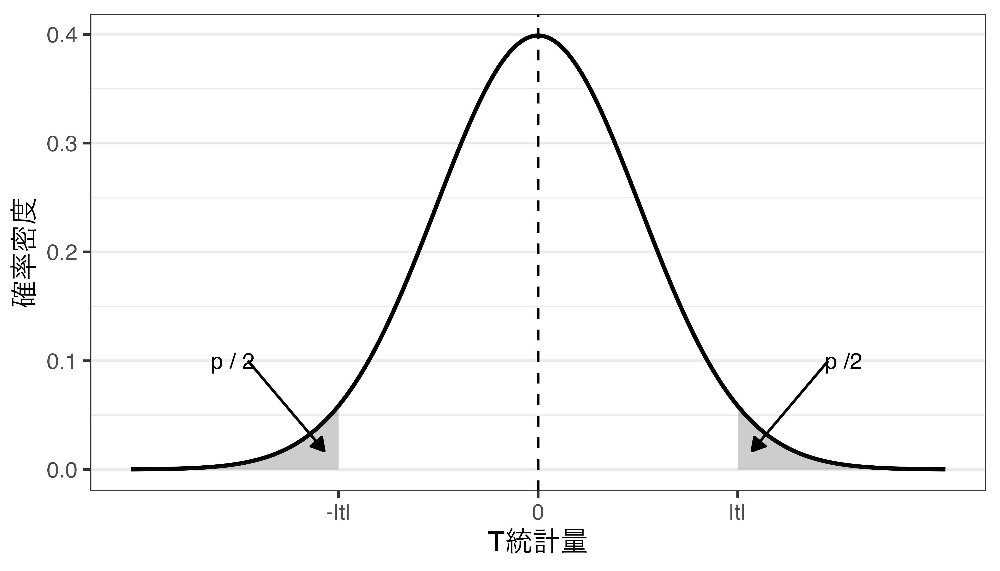
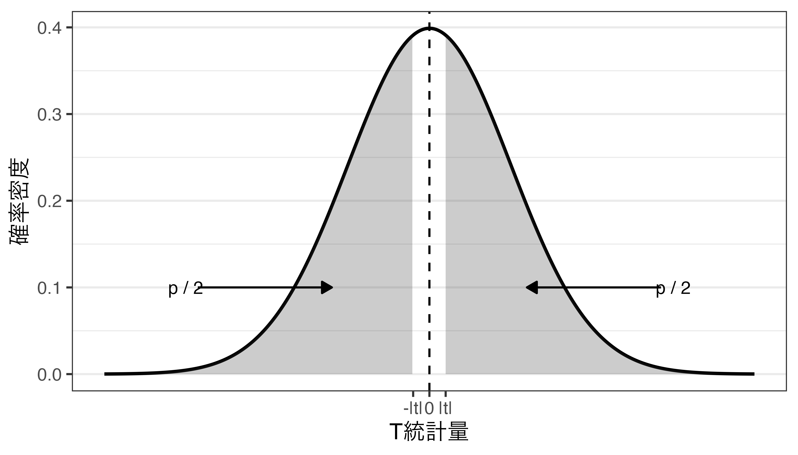
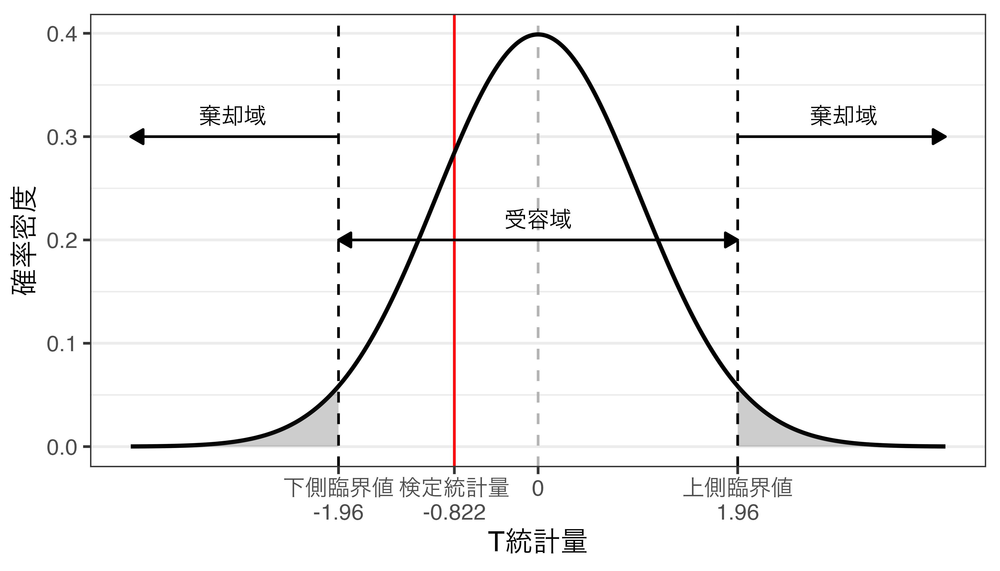

マクロ政治データ分析実習
5/ 統計的仮説検定
関西大学総合情報学部
授業開始前に
すぐに実習できるように準備しておきましょう。
- JDCat分析ツールを起動しておいてください。
- 授業用のプロジェクトを作成 or 開いてください。
- LMSから実習用データ（
Gacha.csv）をダウンロードしておいてください。 - ダウンロードしてデータをプロジェクト・フォルダーにアップロードしてください。
- プロジェクト・フォルダー内に
Dataフォルダーを作成し、そこにアップロードしましょう。
- プロジェクト・フォルダー内に
- 実習用コードを入力するスクリプトファイル、またはQuartoファイルを開き、以下のコードを入力&実行してください。
- スクリプトファイル（
.R）、またはQuartoファイル（.qmd）の保存先はDataフォルダーでなく、プロジェクトフォルダーです。
- スクリプトファイル（
- トラブルが生じた場合、速やかにTAを呼んでください。
統計的仮説検定の基礎
統計的仮説検定の手順
- 検定の対象となる仮説を設定する。
- 検定の基準となる有意水準（= \(\alpha\)）を設定する。
- 検定に利用する統計量（=検定統計量）の値を計算する。
- 利用する検定統計量の標本分布と有意水準に従って棄却域を決める。
- 検定統計量の値が棄却域に入るかどうかによって仮説検定を行う。
- 検定の結論を述べる。
問題設定
あるソシャゲにおいて★5のキャラクター（SSR）をガチャで引ける確率は3%であると知られている。そこでプレイヤー10人が行った4772回分のガチャ記録（\(n\) = 4772）を入手し、調べた結果、SSRは118回（= 2.792%）出現した。SSRが引けた場合1、引けなかった場合を0とした場合、標本不偏分散の平方根（\(u\); 以降、「標準偏差」）は0.165であった。約0.208%ポイントの差（= 3 - 2.792）ではあるものの、怪しい。このガチャからSSRが引ける確率は本当に3%だろうか。
| レア度 | 獲得確率 |
|---|---|
| N (★★) | 57% |
| R (★★★) | 25% |
| SR (★★★★) | 15% |
| SSR (★★★★★) | 3% |
| レア度 | 出現回数 (枚) | 割合 (%) | 累積割合 (%) |
|---|---|---|---|
| N | 2417 | 57.2 | 57.2 |
| R | 1050 | 24.8 | 82.0 |
| SR | 642 | 15.2 | 97.2 |
| SSR | 118 | 2.8 | 100.0 |
| 計 | 4772 | 100.0 |
- 参考: 変数が0または1の値のみを取る場合、これから紹介する「\(t\)検定」でなく、「母比率の検定」を使うのが適切であるが、ここではより汎用性の高い\(t\)検定の例で紹介する。母比率の検定（
prop.test()）についてはサポートページの講義資料を参照すること。
データの読み込み
| 変数 | 説明 |
|---|---|
| player | プレイヤーのID |
| trial | 当該プレイヤーの何番目のガチャか |
| stone_type | 使用した石のタイプ (free: 無料石、paid: 有償石) |
| result | ガチャの結果 (N, R, SR, SSR) |
ガチャ結果をダミー変換する（if_else()使用）
# A tibble: 4,227 × 8
player trial stone_type result result_N result_R result_SR result_SSR
<dbl> <dbl> <chr> <chr> <dbl> <dbl> <dbl> <dbl>
1 1 1 paid N 1 0 0 0
2 1 2 free N 1 0 0 0
3 1 3 free N 1 0 0 0
4 1 4 free R 0 1 0 0
5 1 5 paid R 0 1 0 0
6 1 6 free R 0 1 0 0
7 1 7 free R 0 1 0 0
8 1 8 free R 0 1 0 0
9 1 9 free R 0 1 0 0
10 1 10 paid N 1 0 0 0
# ℹ 4,217 more rowsガチャ結果をダミー変換する（{fastDummies}パッケージ使用）
# A tibble: 4,227 × 8
player trial stone_type result result_N result_R result_SR result_SSR
<dbl> <dbl> <chr> <chr> <int> <int> <int> <int>
1 1 1 paid N 1 0 0 0
2 1 2 free N 1 0 0 0
3 1 3 free N 1 0 0 0
4 1 4 free R 0 1 0 0
5 1 5 paid R 0 1 0 0
6 1 6 free R 0 1 0 0
7 1 7 free R 0 1 0 0
8 1 8 free R 0 1 0 0
9 1 9 free R 0 1 0 0
10 1 10 paid N 1 0 0 0
# ℹ 4,217 more rows度数分布表、統計量の確認
- \(\bar{x}\): SSR出現の平均値
- \(u\): SSR出現の標準偏差
仮説の設定
仮説: SSRキャラクターの本当の出現確率（=母平均\(\mu\)）は3%（=0.03）ではない。\(\Rightarrow \mu \neq 0.03\)
- 母平均の一致&不偏推定量である標本平均（= \(\bar{x}\)）は0.028
- しかし、本当の出現確率が0.03でも、ガチャ4772回の結果、SSRの出現割合が0.028である可能性は十分あるのでは?
帰無仮説と対立仮説
- 一般的な統計的仮説検定の場合、仮説を直接検証することはしない
- 帰無仮説（null hypothesis）：否定されることによって別の仮説が支持されるような仮説
- SSRキャラクターの本当の出現確率は3%である（\(H_0: \mu = 0.03\)）。
- 対立仮説（alternative hypothesis）：帰無仮説が否定されることによって妥当性が高められるような仮説
- SSRキャラクターの本当の出現確率は3%ではない（\(H_a: \mu \neq 0.03\)）。
- \(\Rightarrow\)帰無仮説を検定し、帰無仮説を否定することで対立仮説の妥当性が高いことを示す。
- 注意1: 帰無仮説と対立仮説は互いに排反な仮説のペア
有意水準の設定
「どんな時に帰無仮説を棄却するか」について考える段階
- 帰無仮説が仮定する母数が正しい（\(\mu_0 = \mu = 0.03\)）としても、標本から得られる統計量\(\bar{x}\)は\(\mu_0\)と一致しない可能性が十分あり得る。
- ぴったり3%の割合でSSRが得られるとは言えない。
- \(\mu_0\)は帰無仮説が仮定する母数
- ただし、\(\mu = 0.03\)なら、標本内のSSRの割合はぴったり3%でなくても、3%から大きく離れた値は得られないはず
- どれくらいかけ離れていれば帰無仮説は間違っていると言えるか?
- 出現しうる統計量をすべて並べる。
- ガチャを4772回引いた場合の得られる結果（すべてSSR〜すべてSSR以外）を並べ、帰無仮説が仮定する母数（\(\mu_0 = 0.03\)）からA%分離れている場合、「帰無仮説から十分に離れている」と判断し、このA%が「有意水準（significance level）」
- 有意水準：帰無仮説が正しいにもかかわらず、誤って帰無仮説を棄却してしまう確率
- 有意水準は通常、\(\alpha\)と表記し、有意水準が5%なら\(\alpha = 0.05\)
- 社会科学では\(\alpha = 0.05\)を採用するケースが多い。
統計量が\(t\)分布に従っている場合
標本平均を変形した\(T = \frac{\bar{x} - \mu}{\text{SE}}\)は自由度\(n-1\)の\(t\)分布に従う。
- 帰無仮説が正しければ（\(\mu = \mu_0\)）、 \(T = \frac{\bar{x} - \mu_0}{\text{SE}}\)も\(t\)分布に従う。
- \(t\)分布の中心は0
- もし、標本から得られた統計量（標本平均\(\bar{x}\)）が0.03（\(\mu_0\)）なら、\(T = 0\)となり、帰無仮説の妥当性は高いと判断される。
- \(\bar{x}\)が0.03から離れるほど、統計量\(T\)も0から離れるようになる。
- どれくらい離れている場合、「帰無仮説は怪しいぞ」と言えるだろうか。
- 帰無仮説が正しいと仮定した場合、これと同じか、これ以上に極端なことが起こる確率はA%だよ!
- 社会科学では主に「帰無仮説が正しいと仮定した場合、これと同じか、これ以上に極端なことが起こる確率は5%未満なら、対立仮説が正しい」と解釈する。
統計量が\(t\)分布に従っている場合
検定統計量の計算
平均値に関する統計的仮説検定の場合、検定統計量として標本平均（\(\bar{x}\)）よりも\(T\)統計量を使用。
\[ t = \frac{\bar{x} - \mu}{\text{SE}} = \frac{\bar{x} - \mu_0}{\text{SE}} = \frac{\bar{x} - \mu_0}{\frac{s}{\sqrt{n}}} \]
[1] -0.8224918- \(T\)統計量は\(-\infty \sim \infty\)の値を取るが、今回得られた\(t\)の絶対値（\(|t|\)）よりも極端な値をとる確率は? \(\Rightarrow\) \(p\)値
- 対立仮説は「\(\mu_0\)ではない（\(\mu_0 \neq 0\)）」であるため、\(\mu_0\)から負の方向に離れる可能性も、正の方向に離れる可能性もある。したがって、\(t\)ではなく\(|t|\)より極端な値を取る確率を求める。
検定統計量と\(p\)値（=面積の合計）
\(t\)が0から大きく離れると、\(p\)値が小さくなる

\(t\)が0に近いと、\(p\)値が大きくなる

\(p\)値の意味
- \(p\)値とは、帰無仮説が正しいとき、検定統計量が手元のデータから得られた値\(|t|\)以上に、分布の中心からかけ離れた値を取る確率
- 帰無仮説の下でのサンプルから得られた\(t\)の異常性を表す指標であり、\(p\)値が小さいほど、今回得られた\(t\)は異常な値であることを意味
- 今回の\(t\)が異常なのは「帰無仮説が正しい」という仮定の下での判断であるため、帰無仮説が間違っていると考えるのが自然
- \(\Rightarrow\) \(p\)値が十分小さい場合（= \(t\)の異常性が十分大きい場合）、帰無仮説は棄却される。
参考）今回の\(p\)値は0.411
棄却域の設定
「検定統計量がこの領域に入ると帰無仮説は棄却される」における「領域」を決める段階
- \(p\)値が有意水準（\(\alpha\)）より小さくなるような境界線：臨界値（critical value）
- \(t\)分布の場合、左右対称であり、下側臨界値（\(C_L\)）と上側臨界値（\(C_U\)）が存在。
- 分布によっては臨界値が一つのみ存在するケースもある（\(\chi^2\)分布など）。
[1] -1.960461[1] 1.960461- 受容域（acceptance region）：[\(C_L\), \(C_U\)]
- 検定統計量が受容域に含まれると、帰無仮説を受容する。
- 棄却域（rejection region）：(\(\infty\), \(C_L\))と(\(C_U\), \(\infty\))
- 検定統計量が棄却域に含まれると、帰無仮説を棄却し、対立仮説を支持する。
棄却域と受容域
検定統計量と棄却域の比較
帰無仮説の棄却有無を判断する2つの方法
- \(p\)値と有意水準（\(\alpha\)）の比較
- \(p < \alpha\)：帰無仮説を棄却する。
- \(p \geq \alpha\)：帰無仮説を受容する。
- 検定統計量と棄却域の比較
- 検定統計量が棄却域に含まれると、帰無仮説を棄却し、対立仮説を支持する。
- 検定統計量が受容域に含まれると、帰無仮説を受容する。
注意事項
- 有意水準（\(\alpha\)）を大きく設定すると、帰無仮説は棄却されやすくなる（=対立仮説が支持されやすくなる）。
- つまり、自分の主張が支持されやすくなる。
- \(\alpha\)は検定統計量を求める前に予め決めておく。
- 分析後に\(\alpha\)を決めることは研究倫理に反する。
検定統計量はどこに含まれる…?

ガチャの例
いずれかの方法で判定する。
- \(p\)値による判定
- \(p = 0.411\)であり、\(p \geq \alpha\)であるため、帰無仮説を棄却できない（=帰無仮説を受容する）。
- 検定統計量による判定
- \(t = -0.822\)であり、受容域に含まれる。
- 帰無仮説を棄却できない（=帰無仮説を受容する）。
意味
- 帰無仮説が正しい場合、\(\bar{x}\)と\(\mu_0\)の差は0であるため、\(t = 0\)である。
- ただし、「帰無仮説が正しい」ことは検証できない（後述）。
- 帰無仮説が棄却できなかった（=受容された）場合、「現時点では対立仮説が正しいとは言えない」だけであり、帰無仮説が正しいことを意味するものではない。
- 帰無仮説が棄却された場合、\(t \neq 0\)であり、\(\bar{x}\)と\(\mu_0\)の間には統計的に有意味な差が存在することを意味する。
検定の結論の提示
- 帰無仮説（\(H_0\)）：SSRキャラクターの本当の出現確率は3%である。
- 対立仮説（\(H_a\)）：SSRキャラクターの本当の出現確率は3%ではない。
- \(p\)値は0.411であり、\(\alpha\)（= 0.05）以上であるため、帰無仮説は棄却されない。
- SSRキャラクターの出現確率は3%である。 \(\leftarrow \times\)
- SSRキャラクターの出現確率は3%でないとは言えない。 \(\leftarrow \bigcirc\)
- 開発元を訴えることは難しいかも知れない。
- もし、\(p < \alpha\)なら帰無仮説は棄却され、「SSRキャラクターの本当の出現確率は3%ではない。」と結論づけることが可能。
- 弁護士を見つけ、集団訴訟を準備しよう。
「統計的」有意性の罠
自分の主張が支持される = 対立仮説が支持される = \(|t|\)が大きい = \(p\)が小さい
- 人間であれば、\(p\)を小さくしたいという誘引を持つ。
- \(t = \frac{\bar{x} - \mu_0}{\frac{u}{\sqrt{n}}}\)を考えると、\(|t|\)が大きくなる条件とは
- \(|\bar{x}|\)が大きい
- \(u\)が小さい
- \(n\)が大きい
- この中で研究者が決めることができるのは\(n\)のみ
- \(n\)が大きいほど、\(p\)値が小さくなり、帰無仮説が棄却されやすくなる（\(n\)を4倍にすると\(p\)値は約半分に）。
- ただし、統計的推論は「母集団」が対象となるが、「標本」の大きさが仮説の支持有無に影響を与える。
- \(p < \alpha\)（帰無仮説を棄却）は\(\bar{x}\)と\(\mu_0\)の間に「統計的」に有意な差があることを意味し、\(p \geq \alpha\)（帰無仮説を受容）は「差がない」ことを意味しない。
帰無仮説を受容することの意味
刑事裁判における無罪推定の原則
- 無罪であることを前提に、裁判を進める仕組み
- \(H_0\)：容疑者Xは罪を犯していない（= 容疑者Xは無実）。
- \(H_a\)：容疑者Xは罪を犯した（= 容疑者Xは犯人）。
- 検察側の立証によって\(H_0\)が棄却されると、Xは有罪
- 検察側が立証できなかった場合…
- Xは無罪ではあるが、罪を犯したかも知れない。
- 完全犯罪なら検察の立証はできないが、罪を起こした事実はある
- 帰無仮説を棄却：対立仮説の正当性を強く主張できる。
- 帰無仮説を受容：「対立仮説が正しいとは言えない」といった非常に弱い結論
例) 男女の身長差
- \(H_0\)：男性と女性の間に身長差はない。
- \(H_a\)：男性と女性の間に身長差はある。
- 日本国民から男性と女性、それぞれ3人ずつ無作為抽出し、平均身長を比較した結果、男性の平均身長が女性より約1cm高いものの、統計的に有意な差ではなかったら?
- 帰無仮説「男性と女性の間に身長差はない。」は正しい?
- 多分、母集団レベルでは男女間の身長差はあるはず
- 今回の標本ではその差を検証することができなかったことに過ぎず、母集団においては身長の差があるはず。
- 例えば、3人でなく、300人を抽出して仮説検定を行えば…?
- \(n\)が大きくなるほど、\(SE\)が小さくなるため、\(|t|\)が大きくなり、\(p\)が小さくなる。
- 帰無仮説「男性と女性の間に身長差はない。」は正しい?
関数の使用
t.test()関数を使用
- 第一引数は変数のベクトル、
mu引数には帰無仮説上の母数（\(\mu_0\)）を指定する。
One Sample t-test
data: gacha_df$result_SSR
t = -0.82249, df = 4226, p-value = 0.4108
alternative hypothesis: true mean is not equal to 0.03
95 percent confidence interval:
0.02294775 0.03288381
sample estimates:
mean of x
0.02791578 参考）母比率の検定
prop.test()関数を使用：詳細は講義資料を参照すること。
1-sample proportions test without continuity correction
data: 118 out of 4227, null probability 0.03
X-squared = 0.631, df = 1, p-value = 0.427
alternative hypothesis: true p is not equal to 0.03
95 percent confidence interval:
0.02336217 0.03332666
sample estimates:
p
0.02791578